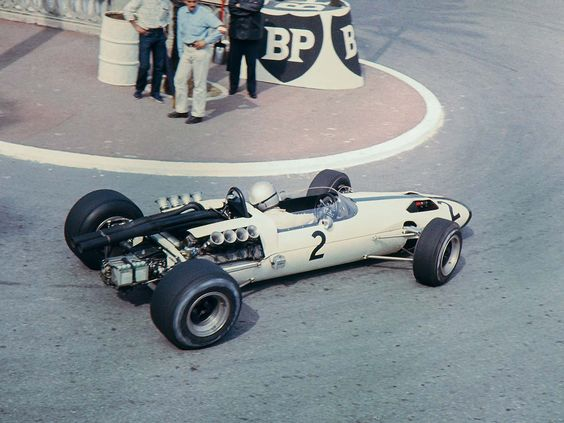
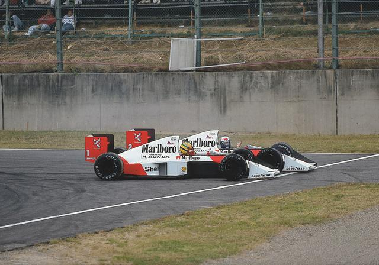
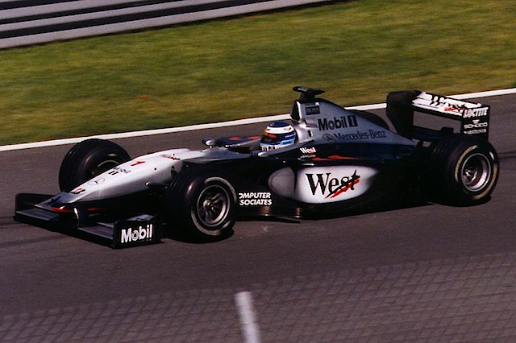
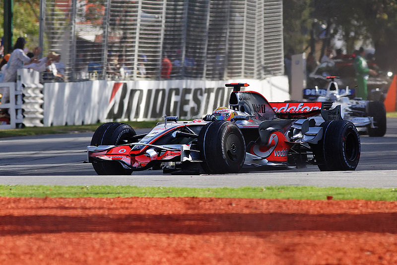
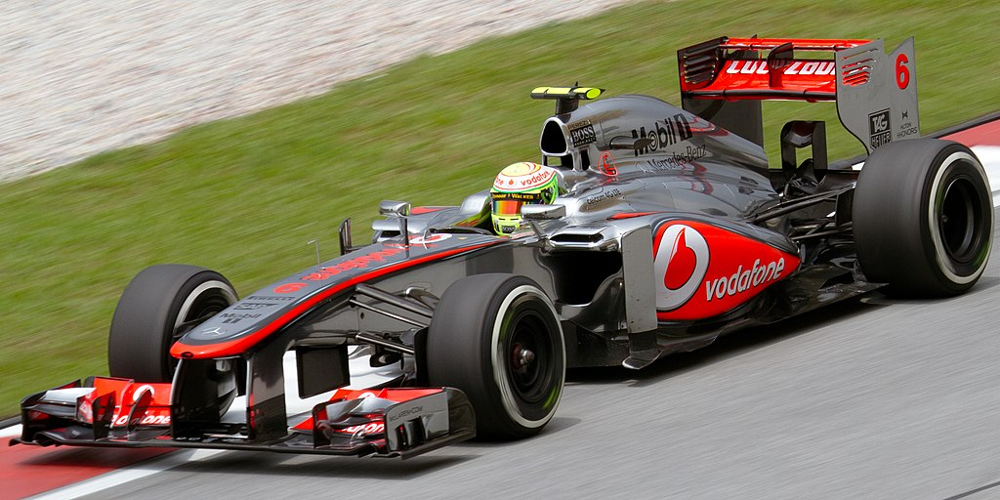
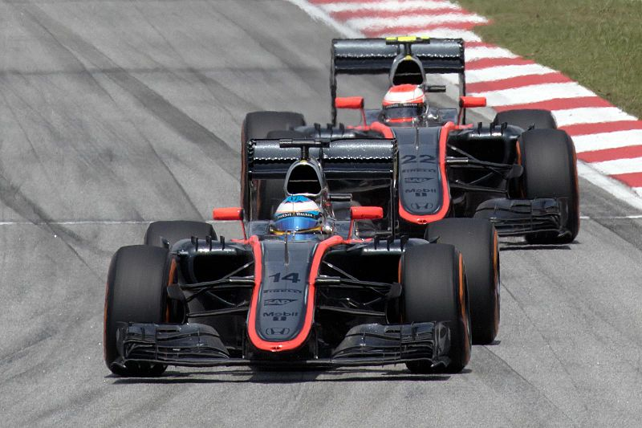
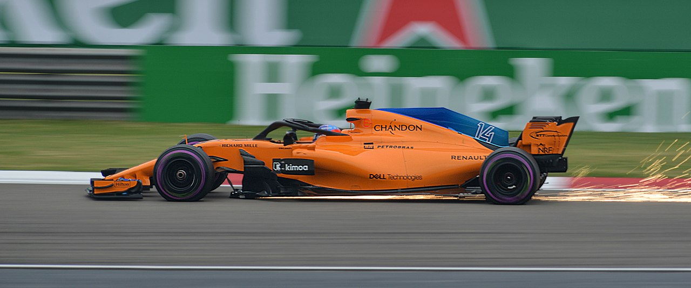
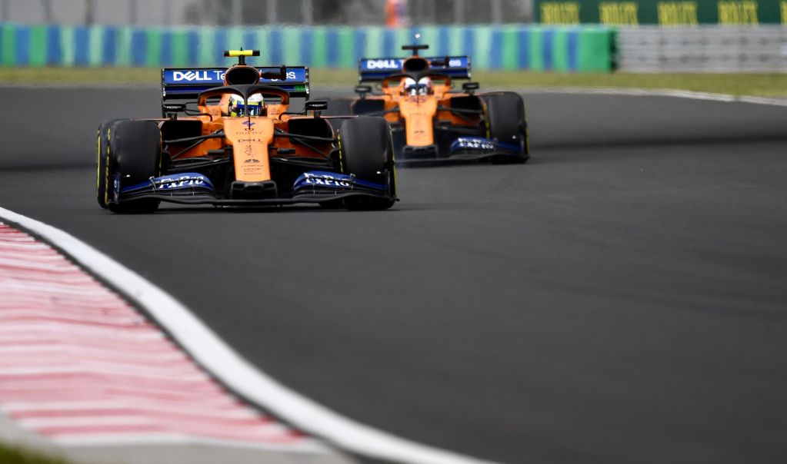

Історія
Макларен (англ. McLaren, повна назва з 2018 — англ. McLaren F1 Team) — британська команда Формули-1 заснована 1963 року Брюсом Маклареном і Тедді Майєром, що представляє собою підрозділ McLaren Technology Group. У різний час команда брала участь і перемагала в різних автоспортивних змаганнях, п'ять разів вигравала змагання CanAm, тричі вигравала «Індіанаполіс 500», по одному разу в гонках 24 години Ле-Мана і 12 годин Себрінга, в даний час команда сконцентрована на участі в чемпіонаті світу Формули-1, де 8 раз завойовувала Кубок Конструкторів. З 2018 року виступає з двигунами Renault, після трьох провальних сезонів з моторами Honda. З 2021 року виступає з двигунами Mercedes.
Брюс Леслі Макларен (англ. Bruce Leslie McLaren; 30 серпня 1937, Окленд, Нова Зеландія — 2 червня 1970, Західний Суссекс, Англія) — новозеландський автогонщик, пілот Формули-1, засновник автогоночної команди «Макларен», яка стала легендарною у Формулі-1.
1960—1970 роки
Дебютною гонкою для Макларен став Гран-прі Монако 1966. До фінішу він не доїхав, припинивши боротьбу на десятому колі через витік масла.
Перші Гран-прі за кермом боліду сидів сам засновник команди Брюс Макларен. Першу перемогу вона здобула 9 червня 1968 року, коли Брюс Макларен виграв Гран-прі Бельгії на трасі Спа-Франкоршам. У червні 1970 р. Брюс Макларен загинув тестуючи в Гудвуді болід призначений для виступів у серії CanAm. Перший титул виграв для Макларен бразилець Емерсон Фіттіпальді у 1974, який випередив у боротьбі за чемпіонство Клея Регаццоні з Феррарі та Джоді Шектера з Тіррелл.
1980-ті
У 1980 році McLaren об'єднався з компанією Рона Денніса Project 4, яка конструювала гоночні автомобілі. З цього року Денніс став одним з керівників команди, а всі боліди McLaren стали проектуватися Project 4 (звідси індекс моделі MP4). У 1982 році Тедді Майер пішов у відставку, залишивши все керівництво в руках Рона Денніса.
У 1984 році для McLaren чемпіонат і кубок конструкторів виграв Нікі Лауда, на половину очка випередивши свого партнера Алена Проста. У тому сезоні машина McLaren MP4/2, побудована Джоном Барнардом і оснащена турбодвигунами TAG-Porsche, дозволила виграти 12 етапів з 16-ти, що було на той момент рекордом.
У 1985 році вже Прост за кермом McLaren MP4/2B виграв чемпіонат і кубок конструкторів. Він повторив свій успіх в 1986 році, але кубок конструкторів дістався конкурентам з Williams.
Програвши чемпіонат 1987 года, команда отримала молодого бразильця Айртона Сенну, а разом з ним і турбомотор Honda. У McLaren з'явився дует пілотів, який подарував світу одні з кращих спортивних протистоянь в історії автоспорту, і в 1988 році команда виграла чемпіонат, здобувши перемоги в 15-ти з 16-ти гонок. Станом на 2022 рік цей рекорд не побитий (в 2002 і 2004 роках команда Ferrari повторювала рекорд за кількістю перемог — 15, але в 17 і 18 гонках сезону, відповідно). Хоча очок на рахунку було більше у Алена Проста, чемпіоном за регламентом чемпіонату (в залік йшли 11 кращих результатів) став Айртон Сенна.
У 1989 році чемпіонат виграв Прост, після чого пішов з команди. Наступні два роки ніхто не міг зупинити Сенну. У 1991 році він став триразовим чемпіоном світу.
1990-ті
Машина 1992 року не йшла ні в яке порівняння з машиною команди Williams, чемпіонат був програний. Сенна зібрався йти з команди, але в останній момент Рон Денніс змусив його передумати. І в 1993 році він змагався з Аленом Простом. У 1994 році Сенна все-таки перейшов з Макларен в Williams.
Але команда невблаганно скочувалася вниз. Лише в 1997 році, отримавши двигуни Mercedes (їх встановлювали з 1995 року) і сріблясті кольори, а також пілотів Міку Хаккінена і Девіда Култхарда, команда повернулася в лідери чемпіонату світу. Того року після майже чотирирічної перерви були здобуті нові перемоги в гонках.
У 1998 році перемогу в чемпіонаті і кубку конструкторів приніс Міка Хаккінен, в 1999 році він отримав тільки чемпіонську корону.
2000-ні
З 2000 року команда трималася на високих позиціях, проте у 2001 році замість Міки Хаккінена, який відійшов з спорту, другим пілотом команди став Кімі Райконен. З 2000 року по 2007 рік не виграла жодного титулу, незважаючи на те, що в 2005 році MP4-20 великою кількістю фахівців був визнаний найшвидшою машиною чемпіонату, чемпіонат був програний і в особистому, і в командному заліку через низьку надійність. У 2006 році був зроблений крок назад — лише 3 місце в кубку конструкторів і тільки 5 місце Кімі Райкконена в особистому заліку.
У 2007 році команда повністю змінила свій склад — на зміну Кімі Райкконену прийшли дворазовий чемпіон світу (2005, 2006) Фернандо Алонсо і молодий британський гонщик Льюїс Хемілтон — чемпіон серії GP2 2006 року. Дует чемпіона і новачка виявився настільки швидким, що незабаром очолив чемпіонат світу. Однак в той же час McLaren піддалися судовим позовом за промислове шпигунство проти Ferrari. Рішенням суду команда McLaren отримала штраф в розмірі 100 млн $, а також була повністю позбавлена очок в кубку конструкторів за 2007 рік. Очки пілотів були збережені. У підсумку, чемпіонат 2007 року було програно командою в останній гонці сезону в Бразилії і в особистому заліку — Хемілтон і Алонсо набрали по 109 очок, чемпіоном світу став Кімі Райкконен, з перевагою в 1 очко.
У сезоні 2008 місце Фернандо Алонсо зайняв фінський гонщик Хейккі Ковалайнен, який дебютував в 2007-му році в складі команди Renault.
McLaren MP4-23 дозволила Льюїсу Хемілтону стати Чемпіоном світу Формули-1 2008 року. Як і рік тому, це сталося в останній гонці сезону — Гран-прі Бразилії. У драматичній боротьбі Льюїс Хемілтон на останньому колі зумів зайняти 5 місце, що дозволило йому випередити на одне очко Феліпе Массу. Команда Макларен посіла друге місце в Кубку конструкторів, поступившись Ferrari.
Перед початком сезону 2009 року Рона Денніса на посаді глави команди змінив Мартін Вітмарш. Початок сезону вийшов невдалим для команди: шасі MP4-24 не вистачало швидкості. Однак у другій частині Чемпіонату зусиллями Хемілтона, який здобув дві перемоги, команда змогла зайняти третє місце в кубку конструкторів.
2010—2014
У сезоні 2010 року за команду виступали Чемпіони світу двох попередніх сезонів Формули-1: в партнери Хемілтону запросили Дженсона Баттона. Шасі для нового сезону MP4-25 було представлено 29 січня 2010 року в Ньюбері, Велика Британія. Гонщикам команди вдалося виграти п'ять гонок і команда посіла друге місце в заліку Кубка конструкторів.
Зберігши свій пілотський склад на 2011 рік, команда знову стала другою в заліку конструкторів. Хемілтон виграв Гран-прі Китаю, Німеччини і Абу-Дабі, а Баттон — Канади, Угорщини та Японії. В особистому заліку Баттон став віце-чемпіоном світу.
У 2012 році команда посіла третє місце в кубку конструкторів, поступившись Red Bull і Ferrari. Хемілтон посів четверте місце в особистому заліку, вигравши Гран-прі Канади, Угорщини, Італії та США, а Баттон зайняв п'яте місце, вигравши Гран-прі Австралії, Бельгії та Бразилії.
У 2013 році за команду виступали Дженсон Баттон і Серхіо Перес, який 28 вересня 2012 підписав багаторічний контракт з McLaren, тим самим замінивши Льюїса Хемілтона, який перейшов в Мерседес. На початку сезону між гонщиками в результаті небезпечної боротьби на трасі в декількох гонках склалися напружені відносини, проте потім зійшли нанівець. За результатами виступів у сезоні керівництво несподівано вирішило відмовитися від послуг Переса і підписало контракт на сезон 2014 рокуз Кевіном Магнуссеном. 20 лютого 2014 був призначений на посаду гоночного директора McLaren F1 Ерік Бульє, який замінив Мартіна Вітмарша. В цілому, сезон виявився провальним для команди — вона зайняла лише 5-е місце в кубку конструкторів. Причиною назвали те, що проводилася розробка досконалого нового боліда, а не модифікація боліда 2012 року.
Двигуни Honda (2015—2017)
16-го травня 2013 року команда McLaren офіційно підтвердила, що з 2015-го року перейде на мотори Honda, після довгих 16 років співпраці з Mercedes. Сезон 2014 року для команди виявився не кращим за попередній. Після завершення сезону Кевін Магнуссен став тест-пілотом команди, а в Макларен повернувся Фернандо Алонсо.
Сезон 2015 року виявився одним з найгірших в історії McLaren. Силова установка Honda, з якою пов'язували великі очікування, виявилася абсолютно недоробленною. Honda відставала в розвитку від своїх конкурентів мінімум на цілий рік. На передсезонних тестах Алонсо потрапив в аварію, пропустив за медичними показаннями старт сезону. Кевін Магнуссен, який замінив його, завершив гонку ще на прогрівному колі в зв'язку з виходом машини з ладу. У 2015-му у легендарного колективу з'явилася велика кількість проблем, машина сильно відставала від своїх суперників. Обидва пілоти зберегли свої місця на 2016 рік, резервним був підписаний новоспечений чемпіон GP2 Стоффель Вандорн. Другий рік продовження співпраці з Honda став набагато більш перспективним, ніж перший, McLaren зміг більше 10 разів претендувати на топ-10 позицій, хоча потужність Honda Power Unit продовжувала показувати себе недостатньою. Після сезону значного прогресу в порівнянні з 2015 роком Алонсо і Баттон завершили чемпіонат на 10-й і 15-й позиціях, відповідно, команда завершила сезон на шостому місці в кубку конструкторів з 76 очками. 3 вересня 2016 Дженсон Баттон оголосив, що візьме перерву на сезон 2017, 25 листопада же підтвердив, що йде з F1. Новим партнером Фернандо Алонсо на сезон 2017 став Стоффель Вандорн.
Двигуни Рено (2018 — 2020)
Під час вікенду на Гран-прі Сінгапуру 2017 року McLaren Racing оголосили, що вони розірвали контракт з Honda і що сезон 2017 буде останній в рамках спільної співпраці; 15 вересня було оголошено про підписання контракту на постачання моторів з Renault Sport Racing і технічне співробітництво на сезони 2018—2020. 2018 рік став першим сезоном в історії McLaren, в якому їх автомобілі оснащені двигунами Renault. Фернандо Алонсо і Стоффель Вандорн продовжили участь в команді на сезон 2018 року. Ландо Норріс став офіційним тест-пілотом і резервним гонщиком команди: 17-річний британець входить в молодіжну програму McLaren і в серпні прекрасно відпрацював на своїх перших тестах за кермом машини MCL32, що проходили на Хунгарорінге.
Технічний директор команди Формули-1 «Макларен» Тім Госс покинув свій пост, таке рішення було прийнято керівництвом, після того як на старті сезону 2018 машина «Макларена» виявилася найслабшою за швидкістю з трьох автомобілів, оснащених двигунами «Рено». 4 липня 2018 року гоночний директор «Макларена» у Формулі-1 Ерік Бульє також подав у відставку і покинув свій пост, після чого головний виконавчий директор «Макларен Рейсінг» Зак Браун спростив організаційну структуру команди. Головний операційний директор «Макларен Рейсінг» Саймон Робертс буде здійснювати нагляд за виробництвом, проектуванням і логістикою, Андреа Стелла стане відповідальним за роботу на трасі, Жиль де Ферран отримав пост спортивного директора. 26 липня 2018 року було оголошено, що після незадовільних результатів останніх років відбуваються кадрові перестановки: Метт Морріс пішов у відставку з посади глави інженерного відділу, інший ведучий технічний фахівець Тім Госс пішов з команди в квітні, спортивний директор Ерік Бульє покинув колектив кілька тижнів потому. 26 липня 2018 року McLaren підтвердив, що Кі погодився стати технічним директором команди.
14 серпня 2018 року Алонсо оголосив про завершення кар'єри в «Формулі-1» після закінчення сезону-2018. У McLaren оголосили про підписання багаторічного контракту з Карлосом Сайнсом. У наступному сезоні 2019 іспанець замінить в команді Фернандо Алонсо. Багаторічний учасник молодіжної програми McLaren, який мав серйозну підтримку колишнього керівництва, офіційно оголосив про розставання з командою. Після заяви про розставання зі Стоффела Вандорна в McLaren підтвердили склад команди на сезон 2019 року: напарником Карлоса Сайнса стане учасник молодіжної програми Ландо Норріс. McLaren підписала контракт з Петом Фраєм. Він очолить відділ інжинірингу команди починаючи вже з наступного Гран-прі Японії. 22 лютого 2019 року було оголошено, що Кі приєднається до McLaren з 25 березня 2019 року, відразу після Гран Прі Австралії
